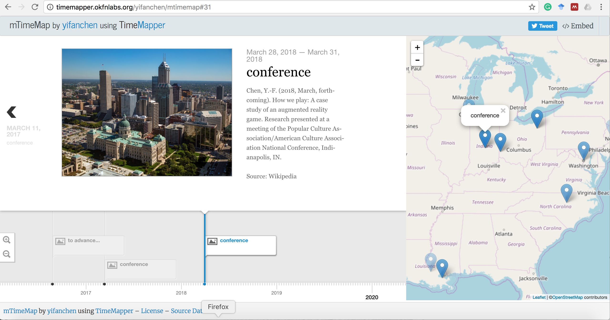
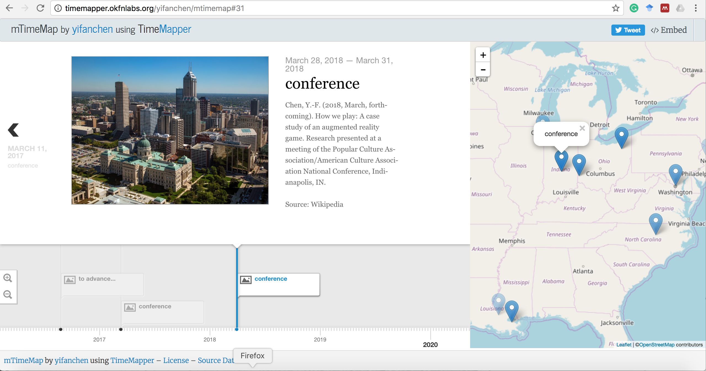

♣ Peer-reviewed journal articles
Chen, Y.-F. (2013). How we share: A cross-cultural comparison of tablet adoption and usage. Intercultural Communication Studies, 22(2), 134-150. Retrieved from http://www.uri.edu/iaics/content/2013v22n2/Yi-Fan%20Chen.pdf
Baesler, E. J., & Chen, Y.-F. (2013). Mapping the landscape of digital petitionary: Prayer as spiritual/social support in mobile, Facebook, and e-mail. Journal of Media and Religion, 12(1), 1-15. doi: 10.1080/15348423.2013.760385
Chen, Y.-F., & Katz, J. E. (2009). Extending family to school life: College students’ use of the mobile phone. In L. Little, E. Sillence, A. Sellen, & A. Taylor (Eds.), A special issue on: The family and communication technologies, International Journal of Human-Computer Studies, 67(2), 179-191. doi:http://dx.doi.org/10.1016/j.ijhcs.2008.09.002 (SCI/SSCI)
Chen, Y.-F. (2007). Public mobile communication technology use: A comparison between America and Taiwan. Intercultural Communication Studies, 16(1), 14-25. Retrieved from http://www.uri.edu/iaics/content/2007v16n1/02%20Yi-Fan%20Chen.pdf
Chen, Y.-F. (2006). Social phenomena of mobile phone use: An exploratory study in Taiwanese college students. Journal of Cyber Culture and Information Society, 11, 219-244. Retrieved from http://ccis.nctu.edu.tw/issueArticle.asp?P_No=13&CA_ID=279
♣ Refereed book chapters, encyclopedia entries and conference proceedings
Chen, Y.-F., & Lever-Mazzuto, K. M. (2015). James E. Katz: An intellectual biography. In Z. Yan (Ed.), Encyclopedia of Mobile Phone Behavior (pp. 362-371). Hersey, PA: IGI Global. Doi: 10.4018/978-1-4666-8239-9.ch031
Chen, Y.-F. (2013). Mobile media dependency: Private consumption in public places. In Proceedings of the meeting of the 8th Media in Transition conference, MIT, Boston, MA. Retrieved from http://web.mit.edu/comm-forum/mit8/papers/yi-fan_chen.pdf
Chen, Y.-F. (2013). Mobile theories and frameworks. In P. Bruck & M. Rao (Eds.), Global mobile: Applications and innovations for the worldwide mobile ecosystem (pp. 73-92). Medford, NJ: Information Today Inc.
Chen, Y.-F. (2013). Public use of mobile media on college campuses. In K. Rizvanoglu & G. Çetin (Eds.), Research and design Innovations for mobile user experience (pp.304-318). Hershey PA: IGI Global.
Chen, Y.-F. (2012). Mobile Communication Studies. In P. Moy (Ed.), Oxford Bibliographies Online: Communication. New York, NY: Oxford University Press. (Article ID is OBO-2378.R2).
Chen, Y.-F. (2012). The Center for Mobile Communication Studies. In Z. Yan (Ed.), Encyclopedia of Cyber Behavior (pp.77-88). Hersey, PA: IGI Global. doi: 10.4018/978-1-4666.0315-8-ch006.
Katz, J. E., Lever, K. M., & Chen, Y.-F. (2008). Mobile music as environmental control and pro-social entertainment. In J. E. Katz (Ed.), Handbook of mobile communication studies (pp. 367-376). Cambridge, MA: The MIT Press.
Chen, Y.-F. (2008). Information communication technologies and socialization: Past, present and future. In I. Kushchu, A. Yazici, & M. Bull (Eds.), Proceedings of mLife 2008 Conference & Exhibitions: Exploring the influence of mobile technologies on life, [CD-Rom], Antalya, Turkey: mGCI.
Chen, Y.-F., & Lever, K. M. (2005). Relationships among mobile phones, social networks, and academic achievement: A comparison of US and Taiwanese college students. In K. Nyiri (Ed.), Seeing, understanding, learning in the mobile age: A Proceeding of the Hungarian Academy of Sciences Conference (pp. 191-196). Budapest, Hungary.
Chen, Y.-F. (2004). The relationship of mobile phone use to addiction and depression among American college students. In S. D. Kim (Ed.), Mobile communication and social change: A Proceeding of the Korean Association of Broadcasting Studies Conference (pp. 344-352). Seoul, Korea.
Yi-Fan Chen | 2017 @ Oxford, Ohio, USA


 
research journey | C.V. available upon request

research journey | C.V. available upon request
 Yi-Fan Chen | 2017 @ Oxford, Ohio, USA
Yi-Fan Chen | 2017 @ Oxford, Ohio, USA